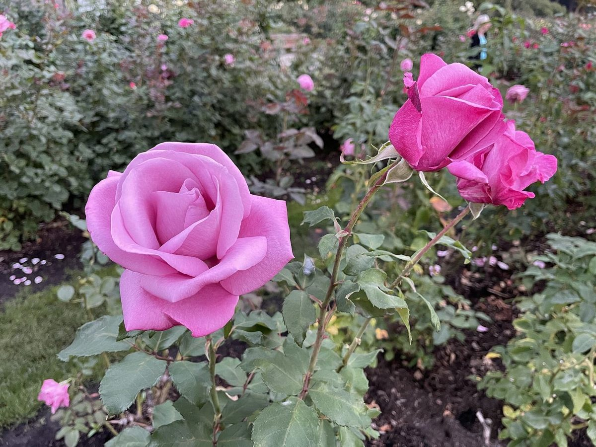
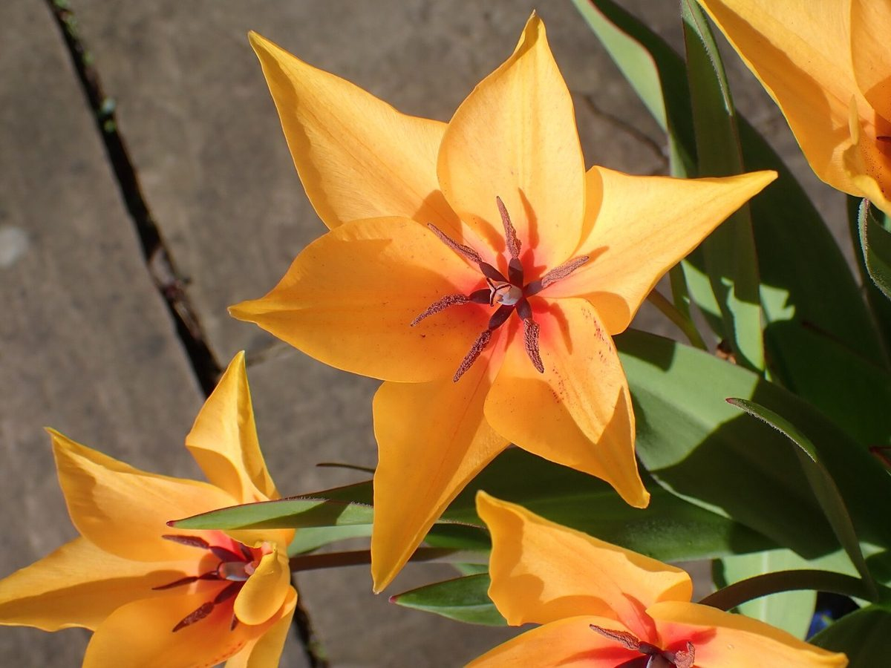

C 心線
口コミのイメージ
ベルトの中を長さの方向に通る、細い糸の列。ここでは三本の声を、一本ずつ並べました。
制作側の創作で、実在のお客様の投稿ではありません。お店の設備・立地・提供内容には触れない、ごく一般的な声のイメージで、実際の口コミに差し替える前提の見本です。
「Instagramをのぞいてみたい」と思っています。
お店のページが公開されたら、ゆっくり読んでみたいです。
写真が増えていくのを、楽しみに待っています。
写真(イメージ)
素材のイメージ
写真は国外・撮影地不明のフリー素材で、お店のものではありません。

